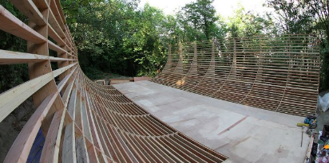
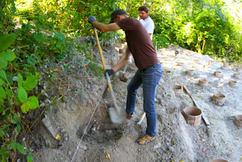

 
Corporate Sponsors
NOTE: If you would like to be a corporate sponsor, please email wstein@gmail.com. The positive benefits for your company could be huge.
Individual Sponsors
NOTE: Please email wstein@gmail.com if for some reason you do NOT wanted to be listed here.
- Brad Johnson (?)
- Eugene Lardizabal ($5000, organize first fundraiser, co-founded Private Skate Facility, LLC)
- Ryan Spence ($500 donation + $1000 misc)
- Dennis Stein ($100)
- William Stein ($15000, co-founded Private Skate Facility, LLC)
- MANY, MANY MORE -- I just haven't had time to finish this list!
Volunteer Workers
- Ryan Spence (massive work; the mastermind behind the design, i.e., the "man with the plan")
- Mark Hubbard (the excavation, pillars, etc.)
- Jon Caposell
- MANY, MANY MORE -- let me know who to add!